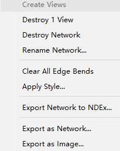
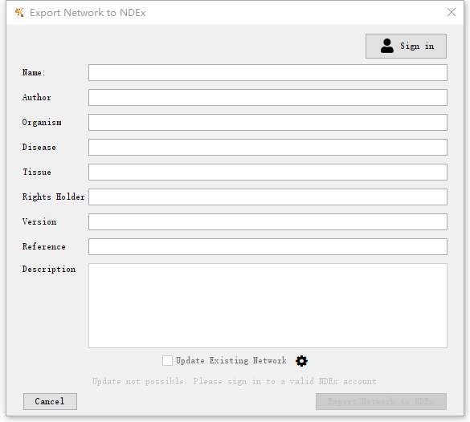
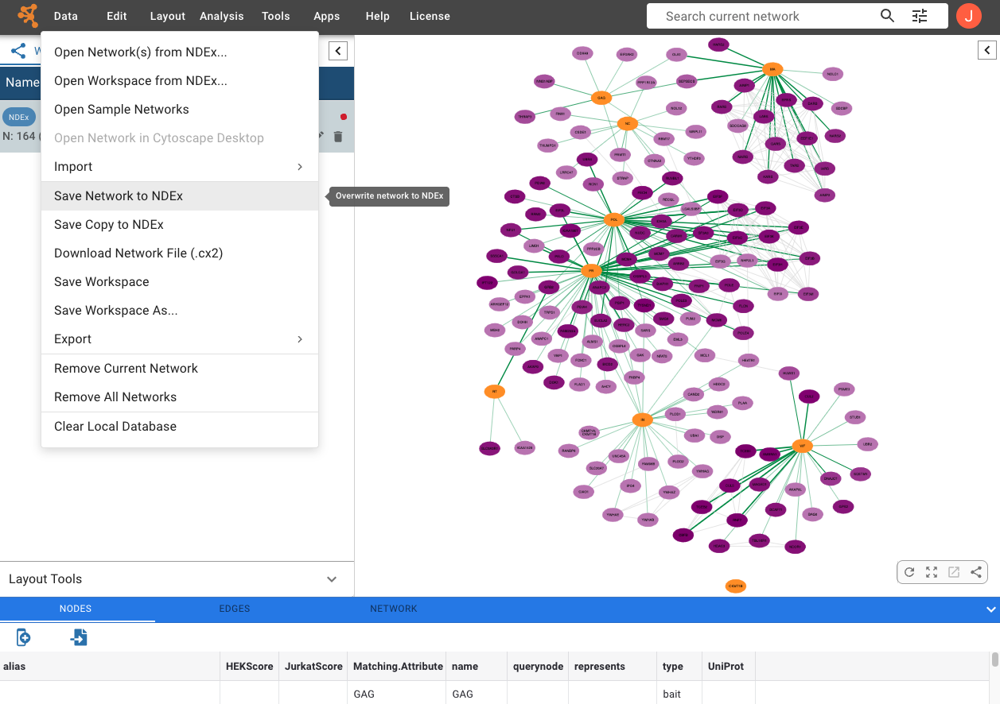
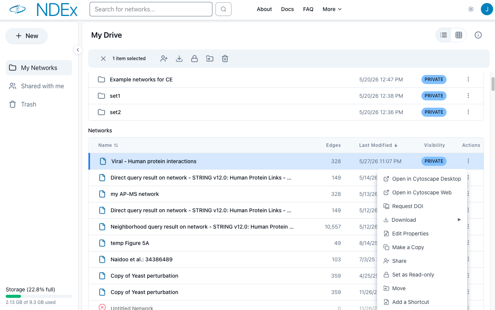
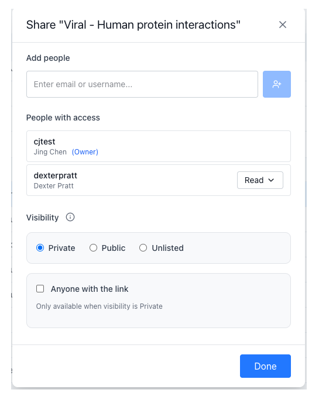

Now let's say you worked on your network in Cytoscape and want to send it to NDEx for storage, sharing or exchange.
First, you need to have an NDEx account. Go to https://www.ndexbio.org/ to create an NDEx account if you already haven't one... Please make sure to take note of your username and password because you will need them in the next step.
Saving networks to NDEx
Right click your network and select Export Network to NDEx...
You can aslo click the NDEx logo and choose Export to NDEx in addition to right-clicking on the network.
In the Export Manager window, sign in to NDEx by entering your username and password.
Then, you can optionally add network attributes by typing in the available text boxes...
When done, click the blue Export network to NDEx button... A confirmation message will let you know when the operation has completed.
Now your network is safely stored in your NDEx account and private to you.
You can make your network publicly available and searchable in NDEx by adjusting its visibility setting via the network properties page in the NDEx webapp.


Saving Cytoscape Web networks to NDEx
Sign in to your NDEx account using the profile button at the upper right corner
Click your network and select Data in the top menu bar
ClickSave Network to NDEx

Go to my-account page in NDEx to share networks
Select your network and click the Actions menu
Click Share from the popup menu

Share Your Network Just Like a Google Doc
Set visibilty: PUBLIC, UNLISTED, PRIVATE
Grant Read or Edit access to specific users, just like sharing a
Google Doc
Generate a shareable link — anyone with the URL can view the network, no NDEx account
required

Request a DOI for Your Publication
ClickRequest DOI from the action menu
Fill out the form and click the blue SAVE AND REQUEST DOI button